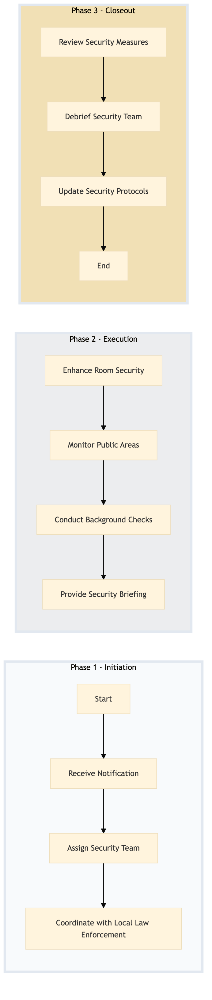

| Role | Steps |
|---|---|
| Front Desk Agent | 1.1 |
| Security Manager | 1.2 1.3 2.3 3.1 3.2 3.3 |
| Executive Housekeeper | 2.1 |
| Security Officer | 2.2 |
| Step | Name | Role | System | Input | Output | KPI | Dec? | Exc? | Pain Point / Risk |
|---|---|---|---|---|---|---|---|---|---|
| 1.1 | Receive Notification | Front Desk Agent | Oracle OPERA Cloud | Check-in notification or advance notice | VIP/Celebrity Security Alert in Oracle OPERA Cloud | < 3 min | N | Y | Delayed check-in notifications can lead to security lapses. |
| 1.2 | Assign Security Team | Security Manager | Oracle OPERA Cloud, Knowcross HotSOS | VIP/Celebrity Security Alert | Security team assignment and communication plan | < 5 min | N | Y | Overlooking security team assignment can compromise guest safety. |
| 1.3 | Coordinate with Local Law Enforcement | Security Manager | Knowcross HotSOS, Book4Time | Security team assignment and communication plan | Coordination confirmation from local law enforcement | < 10 min | N | Y | Poor coordination with local law enforcement can lead to security gaps. |
| 2.1 | Enhance Room Security | Executive Housekeeper | Oracle OPERA Cloud, Assa Abloy VingCard | Security team assignment and communication plan | Room security enhanced with additional locks and surveillance cameras | < 15 min | N | Y | Neglecting room security can expose guests to potential threats. |
| 2.2 | Monitor Public Areas | Security Officer | Honeywell INNCOM, IBM Maximo | Security team assignment and communication plan | Public areas monitored for suspicious activities | < 20 min | N | Y | Inadequate monitoring can lead to security breaches. |
| 2.3 | Conduct Background Checks | Security Manager | Oracle OPERA Cloud, Salesforce | VIP/Celebrity Security Alert | Background check report | < 30 min | N | Y | Missing background checks can increase security risks. |
| 2.4 | Provide Security Briefing | Security Manager | Oracle OPERA Cloud, Book4Time | Background check report | Security briefing to the VIP/Celebrity guest and their entourage | < 10 min | N | Y | Omitting security briefings can leave guests vulnerable. |
| 3.1 | Review Security Measures | Security Manager | Oracle OPERA Cloud, Knowcross HotSOS | End of stay notification | Security measures review report | < 5 min | N | Y | Lack of review can result in recurring security issues. |
| 3.2 | Debrief Security Team | Security Manager | Oracle OPERA Cloud, Book4Time | End of stay notification | Security team debriefing report | < 10 min | N | Y | Inadequate debriefing can affect future security operations. |
| 3.3 | Update Security Protocols | Security Manager | Oracle OPERA Cloud, IDeaS G3 RMS | Security measures review report and debriefing report | Updated security protocols | < 15 min | N | Y | Failure to update protocols can lead to continued vulnerabilities. |
VIP and Celebrity Security Protocol ensures the safety and security of high-profile guests during their stay at a Marriott full-service hotel.